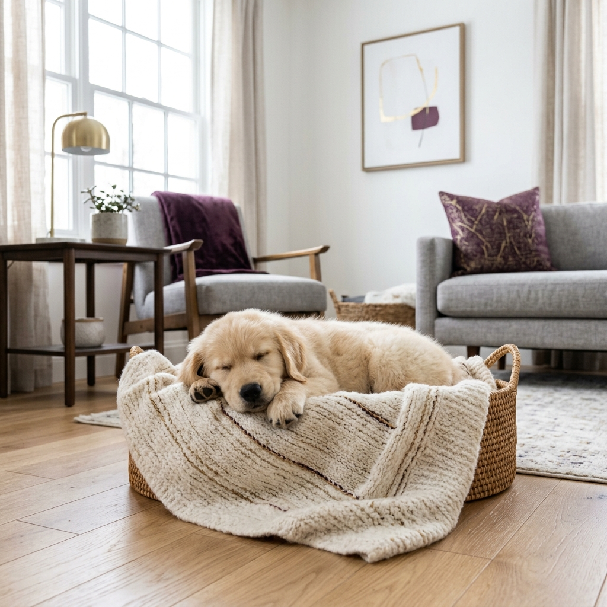

[10탄] 고전적 조건화 극복하기
상처를 덮고 소명을 입히는 개명

유기동물을 입양할 때, 이전 이름을 유지할지 바꿀지는 오랜 논쟁거리였습니다. 최근 행동심리학에 따르면 학대나 방치의 트라우마가 있는 동물의 경우 이전 이름이 '공포를 유발하는 조건 자극(Conditioned Stimulus)'으로 작동할 수 있습니다. 새로운 이름의 부여는 트라우마의 고리를 끊어내는 강력한 치유의 시작입니다.
🕊️ 은혜와 회복을 선언하는 소명(Calling)
새로운 이름은 철저히 긍정적 강화(Positive Reinforcement)와 결합되어야 합니다. 음성학적으로 부드럽고 따뜻한 어감의 이름을 반복적으로 불러주며 간식과 스킨십을 제공하면, 과거의 부정적인 신경 회로가 재구성됩니다.
💡 치유와 소명을 상징하는 축복의 이름
- 조이(Joy) & 그레이스(Grace): 어두웠던 과거를 지나, 가정에 순수한 기쁨과 값없는 은혜를 가져다주는 소명을 상징.
- 노아(Noah): 홍수 이후의 평화처럼, 거친 세상을 지나 도달한 영원한 안식과 위로.
- 온유(Gentle): 상처 입은 신경계가 부드럽게 이완되고, 두려움 없이 온화한 성품을 되찾기를 바라는 소망.